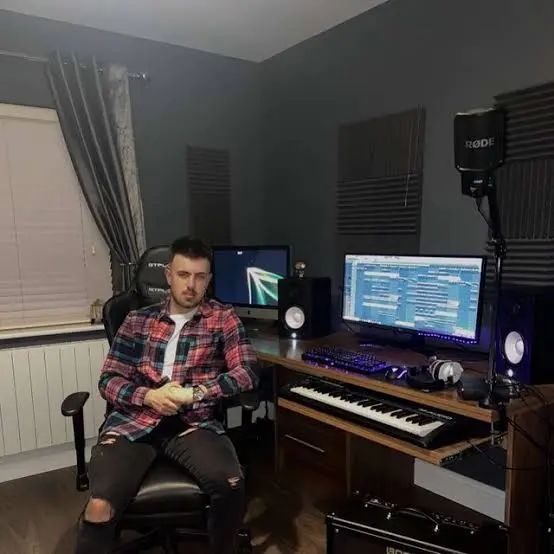
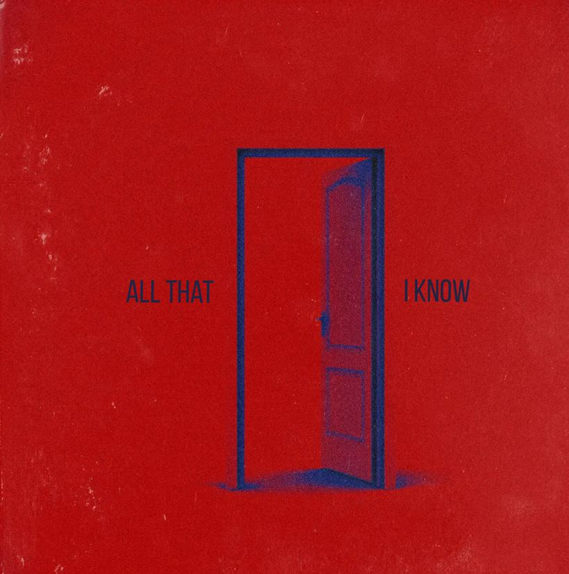
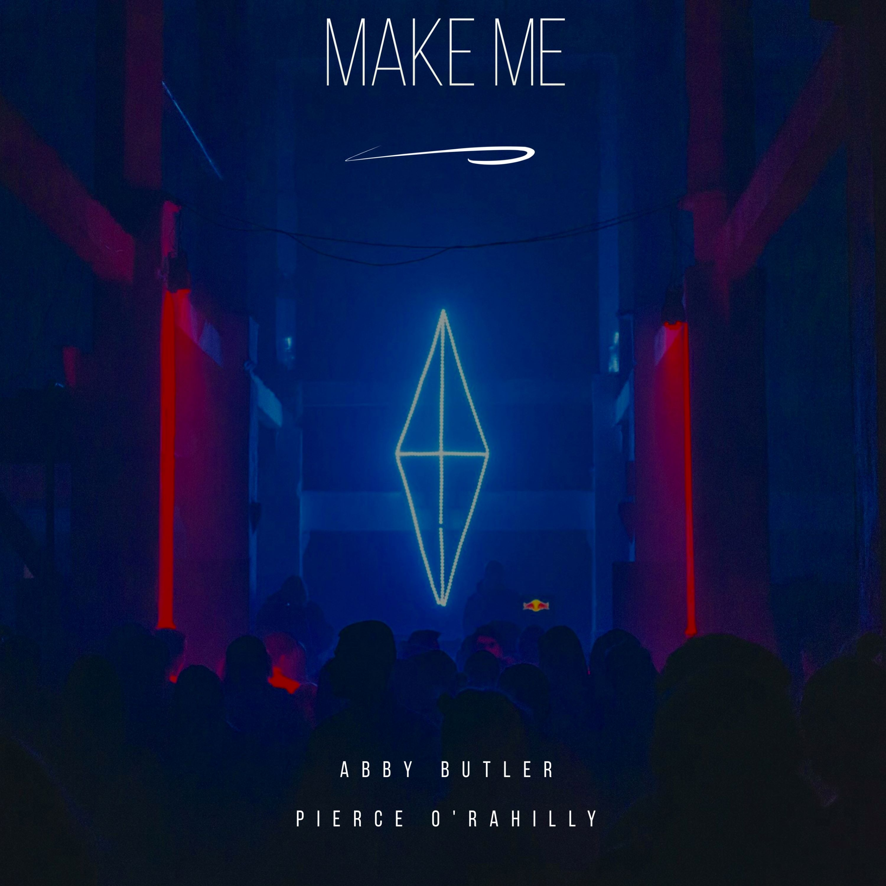

Pierce O Rahilly
Computer Science student & music producer • Driven by creativity and curiosity
About Me
I’m Pierce, a Computer Science student with a strong interest in technology and music. I produce original tracks, create custom pieces, and DJ at events across Limerick City.
I enjoy combining creativity with technical skill, whether that’s building digital projects or shaping sound. Always curious, always learning.
Check out my work below!

Recent Projects
A few things I’ve been building lately.
All That I Know
Make Me
Media
Articles and features:

Contact
Reach out: orahillypierce@gmail.com (for DJ or music enquiries)